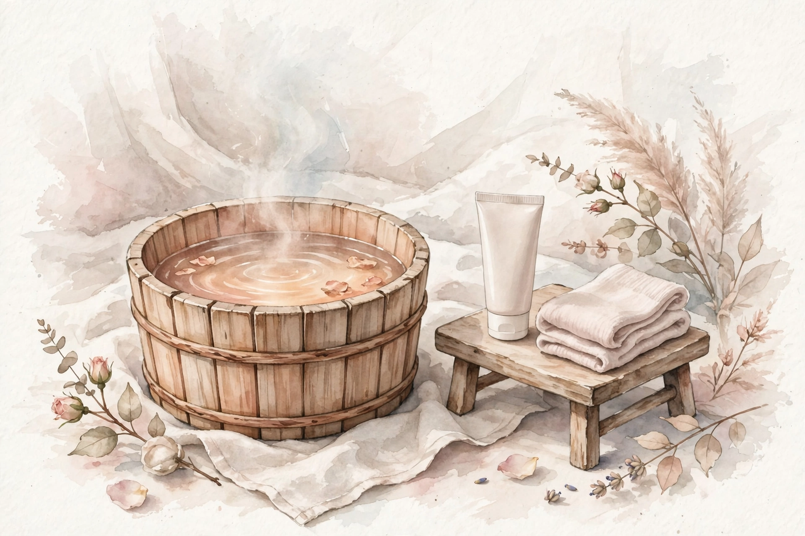

トップ ＞ ボディケア ＞ 足裏・足指のケアと靴下のタイミング
足裏・足指のケアと靴下のタイミング

足のケアは、ボディケアの中でも後回しになりやすい部位です。足裏にクリームを塗ると滑りやすくなる、という生活上の問題もあるため、タイミングの設計が大切になります。この記事では、足裏・足指の塗り方と、靴下をはくタイミングを整理します。
足裏は「動かない時間」に塗る
足裏に塗った直後に歩くと、滑って危険ですし、床にも付いてしまいます。そのため、足裏のケアは就寝前など、この後あまり歩かない時間帯に組み込むのが基本です。入浴後の流れで塗る場合は、塗った後に座ったままできる支度（髪を乾かす、本を読むなど）を先に済ませる順番にすると、安全に時間を置けます。
どうしても日中に塗る場合は、塗った場所に座ったまま少し置き、歩くときは滑りにくい履物を使うなどの配慮をします。
足指の間まで、分けて塗る
足は、裏全体を一度に塗るより、かかと、土踏まず、指の付け根、足指の間、と場所を分けて少量ずつ伸ばす方が、むらなく行き渡ります。足指の間は見落としやすい場所です。指を1本ずつ軽く開きながら塗ると、手順として安定します。施術でも、足は部位を分けて触れるのが基本です。
量の目安は、片足で手のひら半分程度から始めて、感触で調整します。足の甲側は薄く、裏側は少し厚めに、という配分もひとつの方法です。
靴下は、少し置いてから
塗った後に靴下をはくと、寝具や床への付き方を抑えられます。タイミングは、塗ってすぐではなく、表面が少しなじんでからが目安です。靴下の素材は、締め付けの少ない、綿などの柔らかいものが扱いやすいと感じます。朝まで履く場合は、蒸れの感覚が気になる方もいるので、短い時間から試すのが無難です。
足のケアは、部位を分ける、時間を決める、靴下のタイミングを置く。この3点で、安全で続けやすい手順になります。
日中に足のケアをしたい場合は、座って過ごす時間の始めに塗るのが現実的です。デスクワークの開始時や、乗り物での移動中など、しばらく歩かない時間の頭に塗っておくと、その間に表面がなじみます。靴を履く直前は避け、靴下を履き替えるタイミングと合わせるのも方法です。足指の間は汗をかきやすい場所でもあるため、塗る量は薄めを基本にします。かかとの硬さが気になる場合は、入浴後の柔らかい状態のときに、少量を重ねる手順を続ける方が無理がありません。道具を使うケア（やすりなど）は、使い方の表示を確認し、頻度を守って使うことが大切です。
足のケア用品の置き場所は、ベッドサイドや就寝前の動線の上が管理しやすくなります。入浴後に塗る場合は脱衣所、就寝前に塗る場合は寝室、というように、塗るタイミングと置き場所をセットで決めておくと、忘れにくくなります。
セラフィナ「足裏は就寝前が基本。塗って少し置いてから靴下、がタイミングのコツだね」